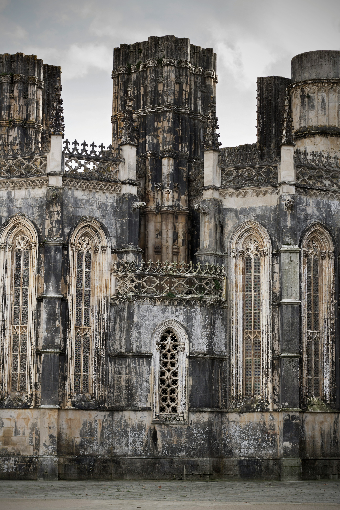
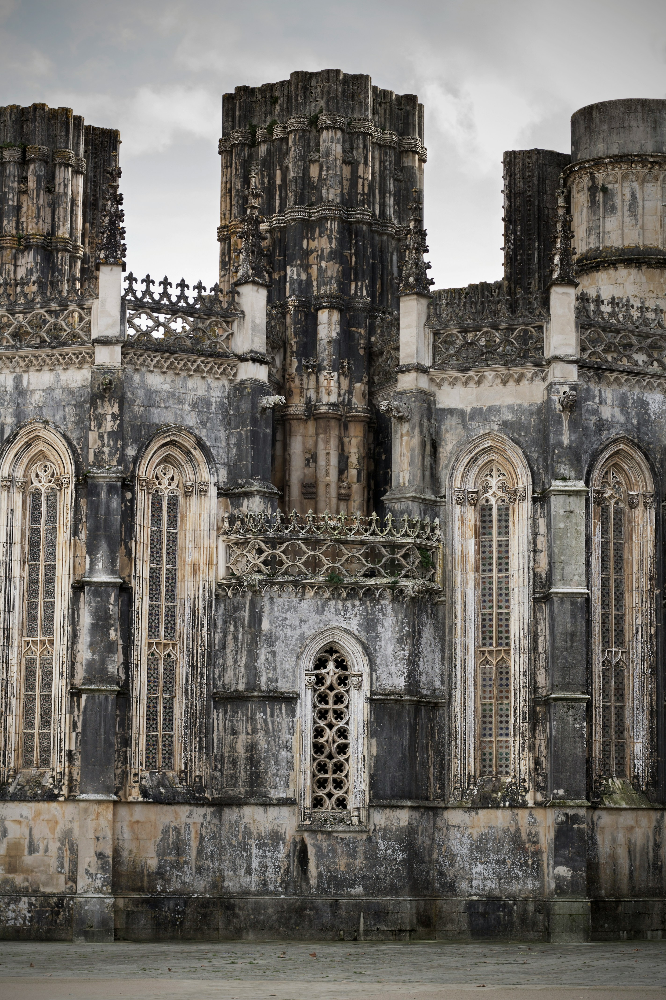

UDLEV DIN ROYALE DRØM I SKOTLAND
Skotland er et land fyldt med en storslået natur og en fascinerende historie, som tydeligt kommer til udtryk i de mange smukke slotte spredt over hele landet. Fra middelalderlige ruiner til overdådige herregårde, hvert slot bærer på unikke fortællinger om klanfejder, royale intriger og historiske begivenheder. Her er en guide til nogle af de smukkeste slotte, du bør besøge i Skotland.
Edinburgh Castle
På toppen af den imponerende vulkanske klippe midt i Skotlands hovedstad, troner Edinburgh Castle stolt og byder besøgende velkommen med sin rige historie og fantastiske udsigt. Slottet har spillet en central rolle i Skotlands historie siden det 12. århundrede, og det har været hjemsted for både konger og dronninger, inklusive Maria Stuart, Dronningen af Skotland. Indenfor kan du beundre de skotske kronjuveler, den berømte Sten af Skæbnen og National War Museum of Scotland. Edinburgh Castle er uden tvivl et af de mest ikoniske slotte i landet.
Eilean Donan Castle
Måske et af de mest fotograferede slotte i Skotland, Eilean Donan Castle ligger malerisk på en lille ø ved sammenløbet af tre søer (Loch Duich, Loch Long og Loch Alsh). Slottet har været brugt i flere film og tv-serier, blandt andet Highlanderog James Bond filmen The World is Not Enough. Det oprindelige slot stammer fra det 13. århundrede, men blev ødelagt og senere genopbygget i det 20. århundrede. Eilean Donan er en drømmelokation, især for dem, der ønsker en idyllisk udsigt over det skotske højland.
Stirling Castle
Stirling Castle var en af de vigtigste fæstninger i Skotland og har en rig historie, som er tæt knyttet til Skotlands nationale identitet. Det var her, mange af landets monarker, inklusive Maria Stuart, blev kronet. Slottet er kendt for sin strategiske beliggenhed på toppen af en klippe og den fantastiske udsigt over det omkringliggende landskab, herunder Stirling Bridge, hvor William Wallace besejrede den engelske hær i 1297. Indenfor finder du overdådigt dekorerede haller og de kongelige lejligheder.
Dunnottar Castle
Dunnottar Castle er både smukt og dramatisk med sin beliggenhed på en stejl klippe ud til Nordsøen, tæt på byen Stonehaven. Slottets ruiner fortæller en historie om brutalitet og modstand, da det i århundreder var en fæstning under klanen Keith. Det var her, de skotske kronjuveler blev skjult under Oliver Cromwells invasion i det 17. århundrede. Naturen omkring slottet gør stedet spektakulært, især på dage, hvor havet stormer mod klipperne.
Balmoral Castle
Balmoral Castle, der ligger i det smukke Aberdeenshire, er kendt som den britiske kongefamilies sommerresidens. Det gotiske slot blev købt af dronning Victoria og prins Albert i 1852, og det er stadig i familiens eje i dag. Slottet er omgivet af frodige haver, skove og bjerglandskaber, hvilket gør det til en smuk og rolig oase.
Inveraray Castle
Inveraray Castle, beliggende ved bredden af Loch Fyne i det vestlige Skotland, er et imponerende eksempel på georgiansk arkitektur med en fransk barokindflydelse. Slottet er hjemsted for hertugen af Argyll, overhovedet for Campbell-klanen, og det har været en del af familiens ejendom i flere århundreder. .